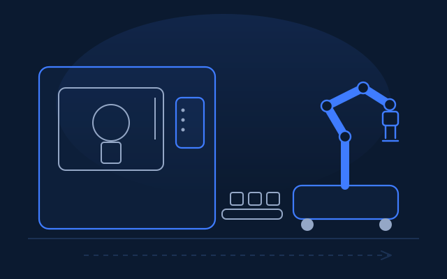

УГТ 8
Универсальный мобильный роботизированый комплекс для обслуживания токарных станков с ЧПУ
Разработан универсальный мобильный роботизированный комплекс для обслуживания токарных станков с ЧПУ, предназначенный для автоматизации загрузки/выгрузки заготовок и обработанных деталей. В рамках проекта создана полная конструкторско-технологическая документация, изготовлен опытно-промышленный образец, разработана единая SCADA-система управления станком и роботом, а также универсальное захватывающее устройство.
10 кггрузоподъёмность
0,03 ммточность
1300 ммрадиус
20 минпереналадка
Ключевые особенности
- Использование коллаборативного робота (6 осей, грузоподъёмность 10 кг, радиус 1300 мм, точность позиционирования 0,03 мм) со встроенными системами безопасности для совместной работы с оператором.
- Быстрая переналадка (менее 20 минут) и интуитивное управление через интеллектуальную панель.
- Гибкость под разные типы заготовок за счёт сменных пневматических захватов и перепрограммирования траекторий.
- Повышенная точность позиционирования благодаря встроенной системе машинного зрения.
- Мобильность обеспечивается автономной пневмосистемой.
- Непрерывность работы достигается за счёт сдвижного стола для заготовок и готовых деталей, исключающего остановки станка.
Технические характеристики
- Количество осей робота – 6.
- Грузоподъёмность робота – 10 кг.
- Радиус действия – 1300 мм.
- Точность позиционирования – 0,03 мм.
- Тип захвата – пневматические системы с возможностью смены инструмента.
- Скорость перемещения робота - 120°/с.